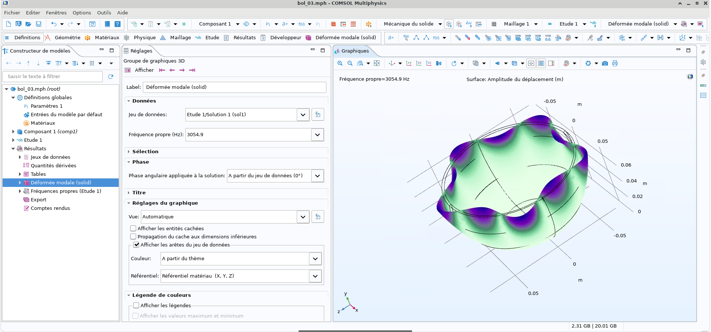

Project Description
This project focuses on the experimental and numerical analysis of the vibration modes of a Tibetan bowl. The objective is to identify the natural frequencies and vibration patterns of the structure, and to validate the numerically predicted mode shapes through dedicated experiments. The work is organized into three parts, each illustrated with a dedicated video.
Technical Tools:
Part 1 — COMSOL Modal Simulation
The bowl was modeled numerically in COMSOL Multiphysique using a modal finite element analysis to predict its natural frequencies and the associated mode shapes. This simulation provides the theoretical reference used to validate the experimental results obtained in the following two parts.
Part 2 — Signal Processing (FFT)
Acoustic recordings of the excited bowl were processed in Python to extract its natural frequencies. A Fast Fourier Transform (FFT) was applied to the recorded signals, allowing the experimental frequencies to be identified and directly compared with the values predicted by the COMSOL simulation.
Part 3 — Experimental Validation of Mode Shapes
The objective of this experiment is to validate the deformation shapes of the bowl's vibration modes, as predicted by the simulation, and more specifically to identify the distribution of nodes and antinodes along the bowl's wall. To do so, a liquid is placed inside the bowl: under the effect of vibration, it forms characteristic patterns on its free surface, revealing the deformation of the wall. The bowl is subjected to a sinusoidal acoustic excitation, generated by a signal generator — allowing a precise excitation frequency to be set — and amplified through a nearby loudspeaker. The frequency is tuned to reach resonance conditions, i.e. the natural frequency of one of the bowl's vibration modes.